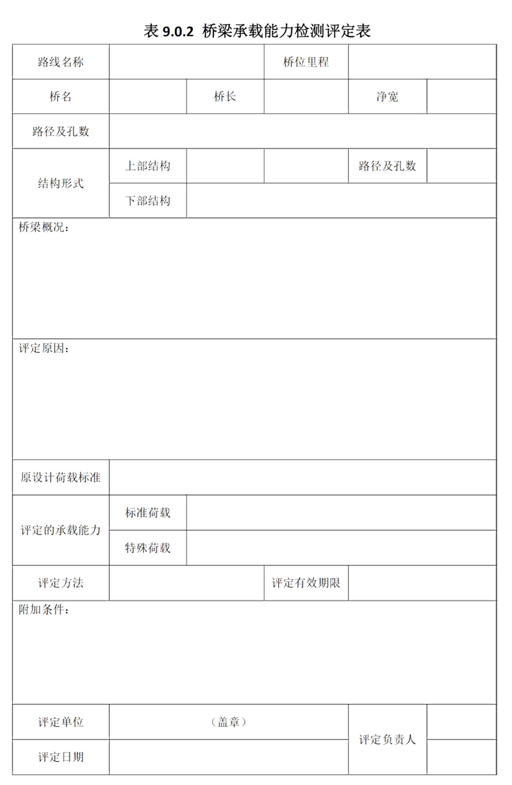

9 检测评定报告编制
9 检测评定报告编制
9.0.1 经过检测评定的桥梁应撰写桥梁承载能力检测评定报告，报告应包括以下内容：
- 桥梁概况；
- 评定目的；
- 桥梁调查与检测情况；
- 桥梁结构检算情况；
- 典型病害成因分析；
- 荷载试验及资料整理分析(未做荷载试验的桥梁略去此项)；
- 桥梁承载能力评定分析；
- 桥梁承载能力的评定结论及处置建议。
9.0.2 桥梁承载能力检测评定报告应附有必要的原始资料、图表、照片和桥梁承载能力检测评定表，并应存入桥梁技术档案。承载能力检测评定表内容应按表9.0.2填写。
条文说明
本规程来用的承载能力检测评定方法考虑了结构性能在一定时期内劣化的作用响，应确保两次评定之间桥梁结构性能劣化影响不会导致结构承载能力不能满足桥梁安全运管要求。根据养护规范有关规定，定期检查的周期最长不应超过3年，桥梁承载能力检测评定的周期考虑以定期检查周期的2倍左右为宝，表9.0.2中的评定有效期限一般可取为5年。
